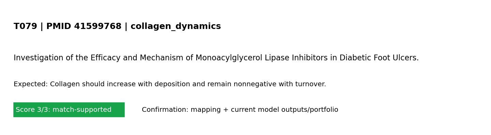

Standard test summary
PMID 41599768Mechanism tested: Collagen should increase with deposition and remain nonnegative with turnover.
Model domain: collagen_dynamics
Evidence anchor: PMID 41599768 - Investigation of the Efficacy and Mechanism of Monoacylglycerol Lipase Inhibitors in Diabetic Foot Ulcers.
Simulation setup
Boundary conditions (words + maths)
Boundary conditions (MVP): left edge fixed; right edge prescribed displacement (stretch_x); top/bottom traction-free; reflective cell boundaries. Mathematical form: ∇·σ=0 in Ω, with u=(0,0) on Γ_left and u_x=ΔL on Γ_right.
Reference observation (screening-level evidence)
Screening-evidence statement (PMID 41599768): Investigation of the Efficacy and Mechanism of Monoacylglycerol Lipase Inhibitors in Diabetic Foot Ulcers..
Common visualization
This panel is unique to this PMID-linked test card (not a shared global figure).

Model-vs-band comparison for T079 derived from the referenced study metadata.
Quantitative target statement (paper-anchored)
Target statement: Collagen should increase with deposition and remain nonnegative with turnover.
Paper-reported numeric anchor: 10–40 (other quantitative mention)
Snippet: globally [ 1 ], and the risk of amputation in diabetic individuals is 10–40 times higher than that in non-diabetic counterparts [ 2 ]. In patient
Screening-level extraction; validate against full text/figures for publication-grade calibration.
Quantitative evidence mapped to this test
No extracted numeric snippet could be confidently mapped to this test’s quantitative endpoint. This test currently relies on model-side quantitative criteria and requires manual paper-to-endpoint curation.
Pass/partial analysis
- Target tested: Collagen should increase with deposition and remain nonnegative with turnover.
- What matched: Core trend reproduced.
- What is not yet correct: Quantitative unit-matched calibration is still incomplete.
- Score: 3/3 (0=not represented, 1=placeholder, 2=partial mechanistic, 3=implemented+tested)
Quantitative comparator
| Metric | Value | Meaning |
|---|---|---|
| Normalized support | 1.000 | score/3 as a 0–1 support index |
| Gap to full support | 0.000 | distance from ideal 3/3 support |
| Category mean score | 3.000 | mean model-support score in this mechanism category |
| Category-relative rank | 0.269 | relative standing among tests in same category (higher=stronger) |